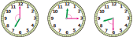

시계의 긴바늘과 짧은바늘이 이루는
작은 쪽의 각이 예각, 둔각 중 어느 것인지 안에 써넣으세요.

7시일 때 시계의 긴바늘과 짧은바늘이 이루는 작은 쪽의 각의 크기는 직각보다 크고 180˚보다 작으므로 둔각입니다.
12시 15분일 때 시계의 긴바늘과 짧은바늘이 이루는 작은 쪽의 각의 크기는 0˚보다 크고 직각보다 작으므로 예각입니다.
8시 30분일 때 시계의 긴바늘과 짧은바늘이 이루는 작은 쪽의 각의 크기는 0˚보다 크고 직각보다 작으므로 예각입니다.